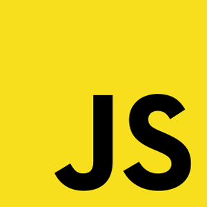
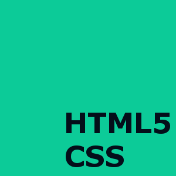

ABILITIES

JAVASCRIPT 60%
Utbildning består väldigt mycket av javascript där den är uppdelad i 3st större delare.
Totalt ger det 125Yh där 5Yh motsvarar 1vecka.

HTML5 CSS 60%
En ren kurs som varade i 1mån.

Grafisk Design samt Grafikprogram 30%
Här lärde vi oss vikten av att använda rätt färger, former och "design-patterns" för att göra webbsidor.
Mjukvara: Photoshop,Gimp,illustrator,incscape och indesign. Metoder: Moqups och Wireframes.